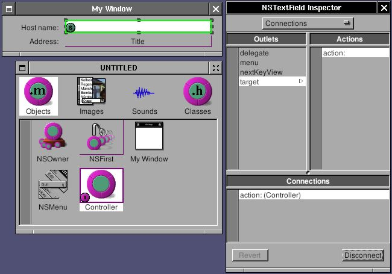

7 - NSLookupService¶
System service is an important feature of GNUstep, which connects applications together. The basic idea is that any application can be a service provider. Service provider will offer some functions for other applications. Through service menu, one application can use the functions of other applications. They can also exchange the data in-between. GNUstep offer several basic service by default. Try open Ink.app. Type something, select some word, choose menu “Services->To upper”, then selected word change to upper case. The function of converting letter into upper case is provider by exampleService, not Ink. Ink simply send the word to exampleService and get the result back. Through system service, you can simply throw an email address in the document to a mail client, throw the url in the document to web browser, or throw the image in imageviewer to a filter and get the result back. With system service, applications can concentrate more on its own and communicate with other applications to expand the functions.
Firstly, let’s start with an application which can use system service. I’ll make an simple application which can look up the address of a hostname. That’s the graphic version of nslookup.
Open Gorm, make an interface looks like this:
Figure 5-1. Interface of NSLookupService

Create a subclass of NSObject called “Controller”, and add two outlets: “hostname” and “address”. Connect the outlet to the NSTextField in the interface.
Figure 5-2. Connect outlet

Add an action called “action:” in Controller and connect action of NSTextField to “action:”
Figure 5-3. Connect action.

Connect delegate of NSOwner (NSApp in this case) to Controller since service is associated with NSApp. It will be useful in the later.
Figure 5-4. Connect delegate of NSApp

Modify Controller.m
Controller.m
- (void) action: (id)sender
{
[address setStringValue: [[NSHost hostWithName: [hostname stringValue]] address]];
}
It takes the value in hostname text field and convert into the address.
Now, I want this application be able to use system service provided by other applications. I only need to add a menu so that menu of system service can shows up.
Controller.m
- (void) awakeFromNib
{
NSMenu *mainMenu, *serviceMenu;
mainMenu = [NSApp mainMenu];
[mainMenu insertItemWithTitle: @"Services"
action: NULL
keyEquivalent: @""
atIndex: 0];
serviceMenu = [[NSMenu alloc] initWithTitle: @"Services"];
[mainMenu setSubmenu: serviceMenu
forItem: [mainMenu itemWithTitle: @"Services"]];
[NSApp setServicesMenu: serviceMenu];
RELEASE(serviceMenu);
}
After the Gorm interface is loaded, add a Services menu. The most important is to assign this menu as the service menu of NSApp. Now, start this application, type something in the NSTextField, and default services can be used. The service menu changes depending on the object you select. If there is no selection, there is no item in the service menu.
Now, I can provide the service for other applications. Only two things are need: one is to write the interface of system service, the other is to implement the system service. The interface of system service is in the property list of the application. In this case, it is NSLookupServiceInfo.plist since I name this application as NSLookupServiceInfo.
NSLookupServiceInfo.plist
{
NSServices = (
{
NSPortName = NSLookupService;
NSMessage = getAddress;
NSSendTypes = (NSStringPboardType);
NSMenuItem = {
default = "Get Address";
English = "Get Address";
};
NSKeyEquivalent = {
default = "G";
};
}
);
}
In property list, NSPortName is the name of the application. NSMessage is the method I need to implement later. NSSendTypes is the type of pasteboard to use when other application want to send data to this application. In other word, this application only accept NSStringPboardType, not other data type. NSMenuItem and NSKeyEquivalent is the menu which will show up in the service menu of all the applications. The menu will show up only when the selection is the type of string.
As the NSMessage is getAddress, I have to implement getAddress method. The interface of this method is fixed as:
- (void) getAddress: (NSPasteboard *) pboard
userData: (NSString *) userData
error: (NSString **) error
getAddress: is the name the same as NSMessage. pboard is the pasteboard which contain the data from other applications. userData is the string if you have NSUserData in the property list of NSServices. error is the error message you want to shows up if something wrong.
Now, let’s implement this method in Controller.m
Controller.m
- (void) getAddress: (NSPasteboard *) pboard
userData: (NSString *) userData
error: (NSString **) error
{
NSArray *allTypes;
NSString *name;
Check whether pasteboard reall contain NSString type. If not, show the error.
allTypes = [pboard types];
if ( ![allTypes containsObject: NSStringPboardType] )
{
*error = @"No string type supplied by pasteboard";
return;
}
Get the string out of pasteboard. If there is no string, show the error.
name = [pboard stringForType: NSStringPboardType];
if (name == nil)
{
*error = @"No string value supplied by pasteboard";
return;
}
Put the hostname into the NSTextField, check whether it is valid. If not, show the error. Use -action: to get the address
[hostname setStringValue: name];
if ([[NSHost hostWithName: name] address] == nil)
{
*error = @"Host name is not valid";
return;
}
[self action: self];
}
Finally, I have to let NSApp know which object in this application provides the service.
- (void) applicationDidFinishLaunching: (NSNotification *) not
{
[NSApp setServicesProvider: self];
}
In other word, you can have an object specialized for providing service.
You have to install this application to make the service work, and you have to run make_services so that GNUstep can know there is a new service. make_services is a tool of GNUstep, and is called in GNUstep.sh or GNUstep.csh. Therefore, everytime you login, it is called automatically. If you install new application which offer system service, you must manually run make_services or login again.
After runing make_services, open Ink. Type something and select them. Now, service menu of Ink should show the service provide by NSLookupService. Choose the menu, and NSLookupService will start automatically. If the selected string is valid hostname, NSLookupService will show its address, otherwise, Ink will show the error message provided by NSLookupService.
If I want to get the value back from NSLookupService, it’s easy. Add the return type in property list:
NSLookupServiceInfo.plist
{
NSServices = (
{
NSPortName = NSLookupService;
NSMessage = getAddress;
NSSendTypes = (NSStringPboardType);
NSReturnTypes = (NSStringPboardType);
NSMenuItem = {
default = "Get Address";
English = "Get Address";
};
NSKeyEquivalent = {
default = "G";
};
}
);
}
The return type is also string in this case. In the end of -getAddress:, I just need to put the return value back into the pasteboard. Whatever application use this service will get the return value from the pasteboard.
Controller.m
- (void) getAddress: (NSPasteboard *) pboard
userData: (NSString *) userData
error: (NSString **) error
{
NSArray *allTypes;
NSString *name;
allTypes = [pboard types];
if ( ![allTypes containsObject: NSStringPboardType] )
{
*error = @"No string type supplied by pasteboard";
return;
}
name = [pboard stringForType: NSStringPboardType];
if (name == nil)
{
*error = @"No string value supplied by pasteboard";
return;
}
[hostname setStringValue: name];
if ([[NSHost hostWithName: name] address] == nil)
{
*error = @"Host name is not valid";
return;
}
[self action: self];
/* For return value */
allTypes = [NSArray arrayWithObject: NSStringPboardType];
[pboard declareTypes: allTypes owner: nil];
[pboard setString: [NSString stringWithFormat: @"%@ (%@)", name, [address stringValue]]
forType: NSStringPboardType];
}
In this case, I return the original string with its address appended. You can test it in Ink again.
Here is the source code: NSLookupService-src.tar.gz